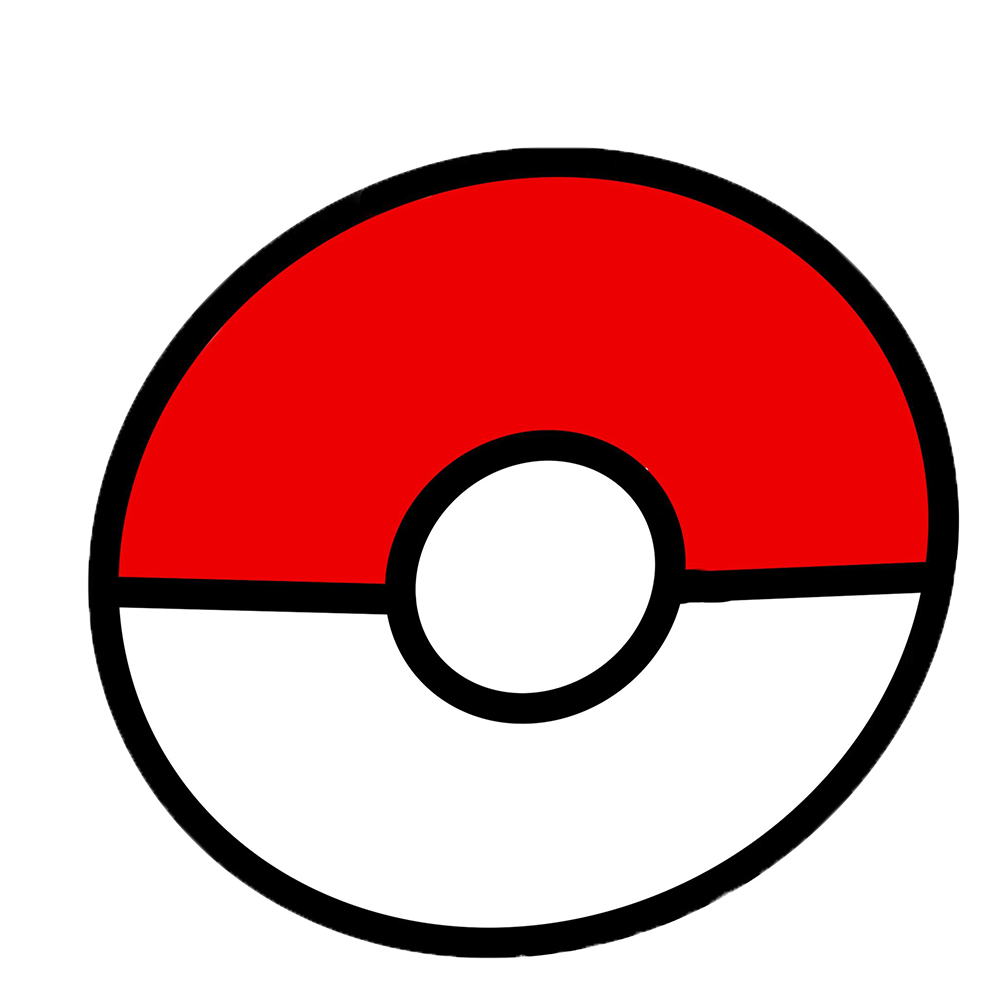
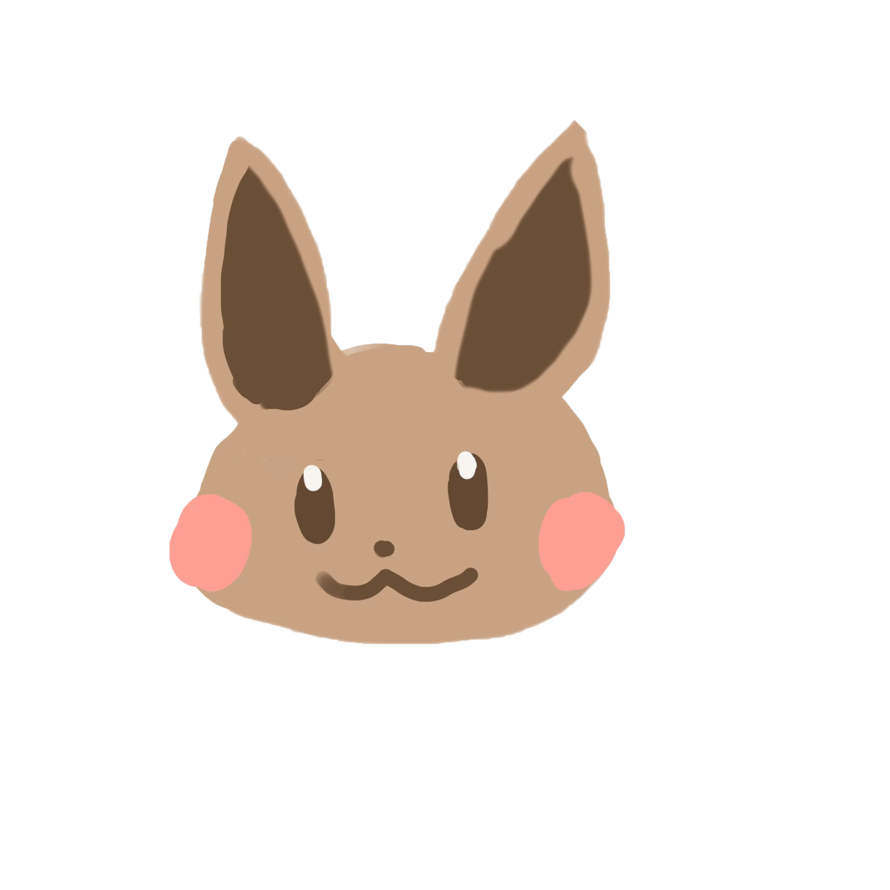

Start to our pokémon jounry
Introduction before the adventure begins
Pokémon are mysterious and incredible creatures that live in the world of Pokémon, and there are a total of 898 known species of Pokémon. Pokémon can be found in the sky, in the sea, in the mountains, in the forests, in the grasslands, in the towns. Some Pokémon live amicably with humans; some wild Pokémon live in the grass, caves or in the sea.
Many humans in the Pokémon world will travel with Pokémon, participate in the Pokémon Magnificence Contest to win ribbon medals or collect badges, and challenge the Pokémon League. Such people are called Pokémon trainers, and they will let their Pokémon battle other trainers or wild Pokémon to create a powerful Pokémon team by using the interplay between Pokémon with different attributes and giving due consideration to characteristics, matching moves and carrying props, and training abilities.
First select your Pokémon
Piplup from Pokemon Diamond Pear.
This game can choose a male or female protagonist to play, another unselected protagonist will become the doctor's assistant, no matter which protagonist you choose, the player will become a fierce enemy with the tame.
Scorbunny from Pokemon Sword and Shield.
Players can explore freely in the wilderness area, and with other players through the "giant" and the powerful wild Pokemon group battle, or in the specific dojo and the battle using the giant, so that the Pokemon in three rounds giant to battle.
Bulbasaur from Pokemon Red and Green.
Players in the game in the third person perspective to control the protagonist travel through a fictional world, Pokemon around to fight against and become a Pokemon master. The goal of the game is to defeat the eight gym masters and the Four Heavenly Kings and champions above them.
Choose the path you want to move forward
The gyms belong to the region's Pokémon League and are led by the gyms master, who can be defeated to earn a badge. Some gyms can only be challenged if certain conditions are met, and some gyms have puzzles that make it impossible to reach the master without passing the puzzle. Usually, in addition to the owner, there are other trainers in the gym. Most gyms are themed around one attribute, but there are exceptions. Usually, there are 8 gyms in an area.
In the competition, Pokémon are scored by appearance and performance. They have different groupings, for example, there are five groups: handsome, beautiful, cute, smart, and strong. They have three rounds, which are judged by appearance charm, dance charm and acting charm. The final score of the competition is the sum of the scores of the three rounds. If there are more than one Pokémon with the same score, the ranking among them will be randomly ordered.